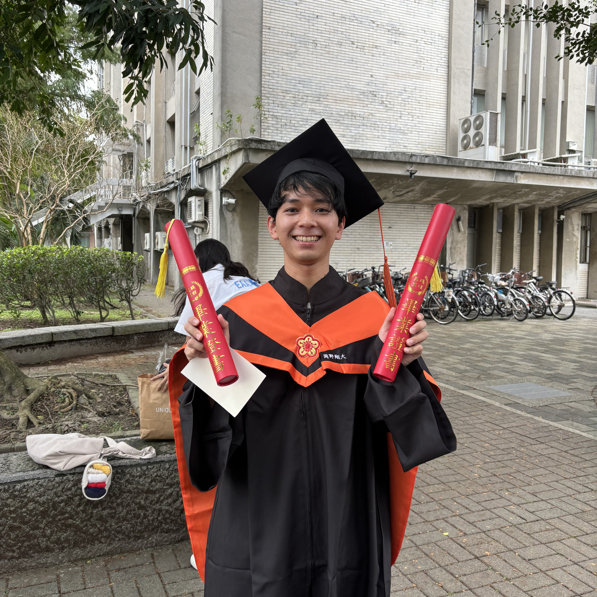

Tel: +81-92-802-3395
E-mail: s-okano@doc.kyushu-u.ac.jp
九州大学大学院 工学府土木工学専攻 災害数理研究室
〒819-0395 福岡県福岡市西区元岡744番地
九州大学伊都キャンパス ウエスト2号館11階 1106号室
Crisis Informatics Laboratory, Department of Civil Engineering, Kyushu University
744 Motooka Nishi-ku, Fukuoka, 819-0395, Japan